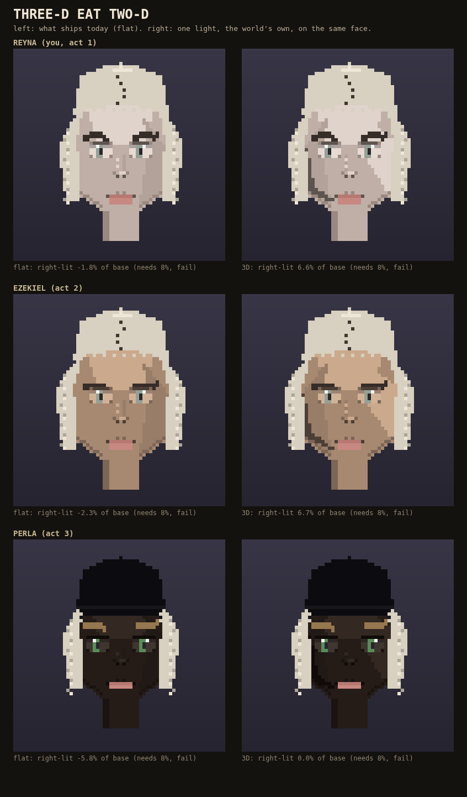

You said "try to make it look 3-D too while we're at it." Here are the three people you already know from the phone strip -- you, then Ezekiel, then Perla -- each shown flat like they ship today, next to one light, the world's own.
The old shadow sat on the RIGHT side of every face, which is backwards: your own world rule says the right side of a lit thing should come out brighter, not darker. Measured on 20 of your crowd, 0 of 20 met that rule and 18 of 20 leaned the wrong way. This moves the shadow to the correct side, gives it a real falloff instead of one flat patch, and adds a highlight on the lit cheek. On these 20 same faces it now passes on 14 of 20, up from 0 of 20 -- direction fixed on all of them, strength enough to clear the bar on about seven of ten.
Perla's own number barely moves: she rolled a durag, and the durag sits over the same forehead-and-temple area the light and shadow live in, so a real chunk of both gets covered before you ever see them. Not a bug in the light -- a real thing a hat does to a face. You and Ezekiel, both bare-headed, show it clearly.
The "turned head" part of your ask is done with light only here, not new face shapes -- the safer half for a first attempt. Nothing here has shipped; your own face on the play surface has not moved.

Thumbs up moves it into the game. Thumbs down and it goes to the graveyard with what to try differently.